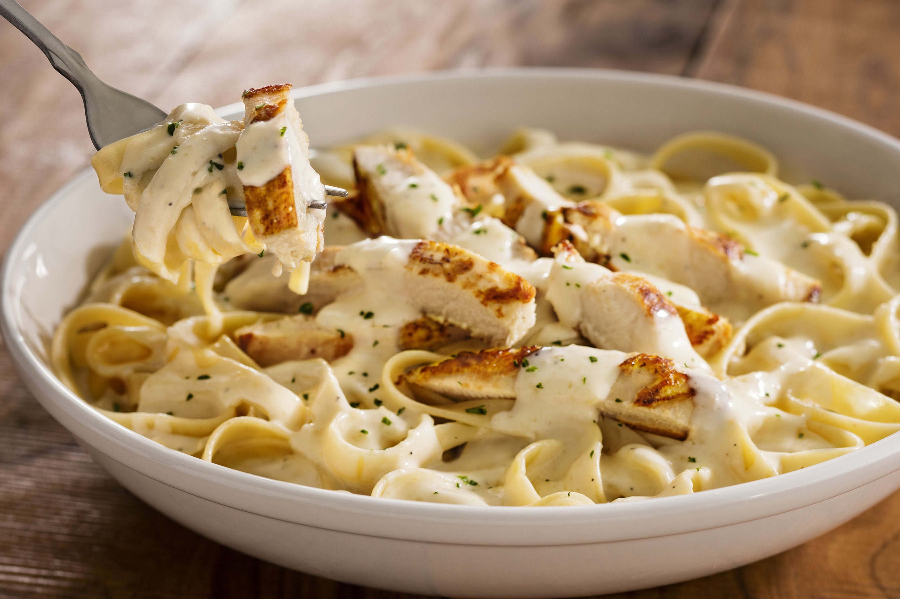

Chicken Alfredo Pasta
What is Chicken Alfredo Pasta?
Chicken Alfredo is a pasta dish with a rich and creamy sauce made from heavy cream and parmesan cheese. The dish is believed to have originated in the early 1970s at the Fettuccine Alfredo restaurant in Rome, Italy, and is now commonly associated with Italian cuisine.
Ingredients
400g/14oz chestnut mushrooms
1 tbsp olive oil
4 banana shallots, finely chopped
100g/3½oz pancetta or bacon lardons
2 garlic cloves, crushed
6 skinless, boneless chicken thighs, cut into bite-sized pieces
300ml/10fl oz chicken stock
300ml/10fl oz double cream
50g/1¾oz parmesan, grated
400g/14oz fettuccine
Salt and freshly ground black pepper
Instructions / How to Cook
1. Heat the olive oil in a large frying pan over a medium heat. Add the mushrooms and fry for 5 minutes, or until golden-brown.
2. Add the shallots and pancetta or bacon lardons and fry for a further 5 minutes, or until the shallots are softened and the pancetta or bacon is cooked.
3. Add the garlic and chicken and fry for 5 minutes, or until the chicken is golden-brown all over.
4. Pour in the chicken stock and bring to the boil. Reduce the heat and simmer for 10 minutes, or until the chicken is cooked through and the stock has reduced by half.
5. Add the double cream and parmesan and stir until the cheese has melted and the sauce is smooth.
6. Meanwhile, cook the fettuccine in a large pan of salted boiling water according to the packet instructions, or until al dente. Drain well.
7. Add the cooked fettuccine to the sauce and toss until well coated. Season, to taste, with salt and freshly ground black pepper.